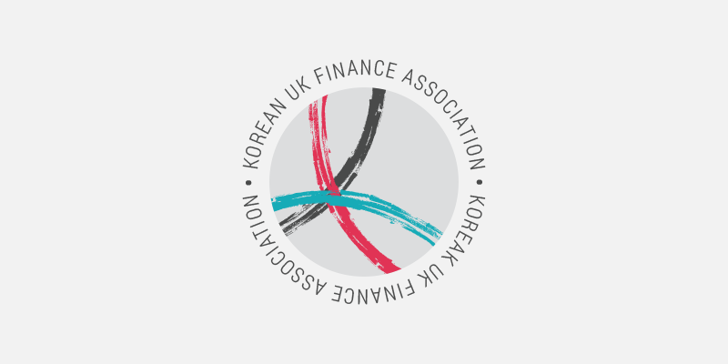
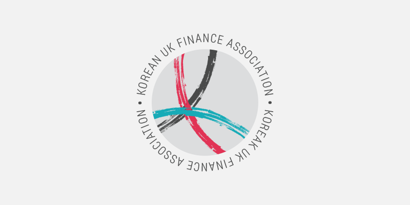

Korean UK Finance Association
The Korean UK Finance Association is a non-profit organization in which Korean financial professionals working in the UK exchange knowledge, experience, and information.
- Role: Graphic Designer
- Design Tool: Illustrator
Logo
For KUFA's logo, I used a twist on two colors present in both the Korean and UK flags- blue and red. A "K" is formed with brush strokes, encapsulated in a circle, representing the unity between members.
Originally I created the horizontal logo, with KUFA adjacent to the icon, but the client asked that I also create a version with the full association name surrounding the circle.
 

I created two sets of the logo, one to be put on light backgrounds, and one for dark backgrounds. This, combined with the two different orientations, ensures that the association will always have a logo appropriate for the situation.